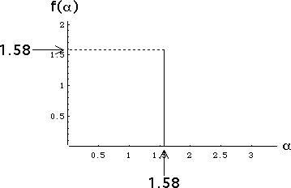

| 6. (a) Say the common value of p1, ..., pN is p. Then the condition
|
| (b) In the equation |
| τ(q) = -Log(p1q + p2q + ... + pNq) / Log(r) |
| taking p1 = ... = pN = p yields |
| τ(q) = -Log(N pq) / Log(r) |
| Using p = 1/N this gives |
| τ(q) = |
| (c) In the equation |
| α(q) = |
| taking p1 = ... = pN = p yields |
| α(q) = |
| Note this is independent of q. Using p = 1/N this gives |
| α(q) = Log(1/N) / Log(r) = Log(N) / Log(1/r) |
| That is, for each q, α(q) = Log(N) / Log(1/r), the similarity dimension. |
| (d) From the equation |
| f(α(q)) = q⋅α(q) + τ(q) |
| we see |
| f(α(q)) = |
| (e) Here is the graph. From (c) we see αmin = αmax = |
| The maximum height of the f(α) curve is the dimension of the attractor, the gasket. |
|  |
Return to Homework 5 Practice.